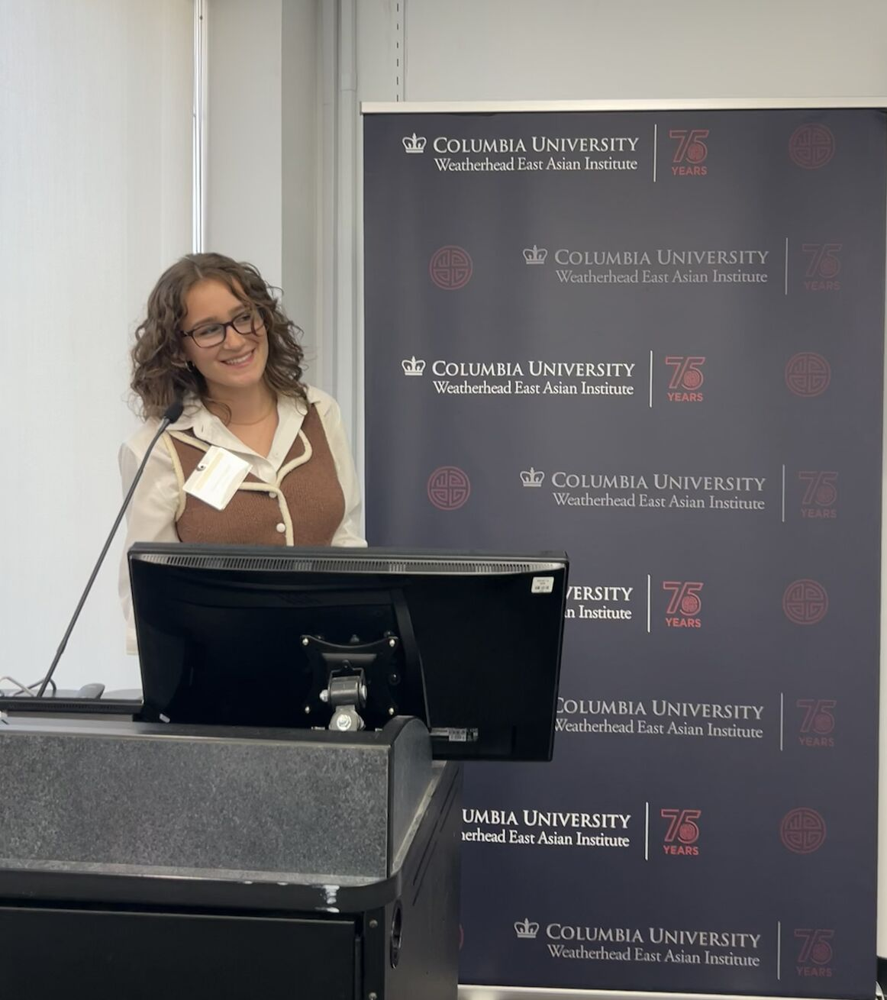

Trump's Triumph: America’s Enduring Misogyny
November 12, 2024
Read here
14th Annual Consortium of African and Asian Affairs Symposium
October 25, 2024
I had the pleasure of presenting at the 14th Annual CAAS Symposium at Columbia University this past weekend. The theme of this year's conference, "what is genocide, and what can universities do about it?", inspired two days of meaningful and timely discussions. Drawing from my paper, I shared insights on how contemporary wars reshape our understanding of conflict, exploring the distinction between traditional, state-centric wars and modern, identity-driven conflicts that often blur the line between war, organized crime, humanitarian crises, and genocide.
I discussed the evolving language around genocide — a term that, while crucial for mobilizing action, is fraught with limitations. By examining cases like Rwanda, Darfur, and the DRC, we can see how legal definitions both empower and restrict meaningful International and humanitarian responses.
Read more

Very Mindful, Very Demure: The Meme of the Summer and What It Tells Us About Viralization
August 26, 2024
This summer’s viral meme, “Very Mindful, Very Demure,” took over social media, popularized by TikTok creator Jools Lebron. Despite its lack of substance, the phrase gained momentum simply because it went viral—a phenomenon I call viralization, a sort of fetishization of the viral. Where content is liked and shared not for its inherent value but because it’s everywhere. This trend reflects how social media culture is increasingly intertwined with marketing and mainstream culture. As brands and influencers latch onto viral moments, our attention is captured by fleeting trends rather than meaningful, long-lasting ideas.
Read more
Different Voice, Same Words: 1924 versus 2024
July 13, 2024
In the early 20th-century, rapid social changes, spurred by industrialization and mass immigration, fueled backlash from white Americans who viewed these shifts as threats to their cultural and economic dominance. This era saw a rise in anti-immigration laws rooted in eugenics and a retreat from progressivism, reinforcing racial hierarchies and a vision of a homogenous white America. A century later, the 2024 presidential election reflects a strikingly similar narrative...
Read more
Radicals can’t just be a nuisance, they must have an ideology to follow
April 26, 2024
Tensions have surely escalated this morning with police-stationining and entry restriction at all access points on campus. The dialogue among my peers was pure outrage and disgust in Shafik for her hasty call upon the NYPD. The overwhelming consensus in my program not only silences alternative views, but stigmatizes them. With no other ideology than you’re with us or you’re not, there has been no debate, no interrogation, and no ideas on how to end the encampment with both sides -- the administration, and the students -- satisfied.
Read more
Sexual Misconduct in Academia
April 12, 2024
Today, faculty members in my department at Columbia hosted a panel discussing the various ways to navigate a department with an [alleged] sexual predator...
Read more